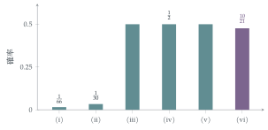

STEP I 2007、第13問
先に進む前に問題を読んでおこう。問題は STEP Support Programme の問題データベースにある： step.maths.org/questions/07-s1-q13
導入
「〜という条件のもとで」は、確率論で最も危険な言い回しである。この問題の最後の四つの小問は、ほとんど同じことを言っているように聞こえる。番号 3 の円盤が最初に取り出される。番号 3 の円盤が取り出される。番号つきの円盤が最初に取り出される。番号つきの円盤が取り出される。このうち三つは答えが \(\frac12\) になるが、残る一つはそうならない。
この違いは、有名な「男の子か女の子か」のパズル（ある家庭に子どもが二人いて、少なくとも一人は男の子である。二人とも男の子である確率はいくらか）の背後にあるものとまったく同じである。このパズルは何世代もの学生を、そして少なからぬ数のプロの数学者をもつまずかせてきた。ここから学ぶべきことは、条件とは「どの結果がまだ起こりうるか」についての精密な言明であり、情報そのものと同じくらい、その情報がどのようにして得られたかが重要だということである。
取りかかる前に
11 枚の円盤から 4 枚を取り出す。事象「4 枚すべてに番号がある」にとって、取り出す順序は関係するだろうか。同様に確からしい 4 枚の組は何通りあるだろうか。
4 枚の円盤のどの組も、取り出される組となる確率は等しいので、順序は無視してよい。同様に確からしい組は \(\binom{11}{4} = 330\) 通りある。
順を追って解く
段階 1 条件なし
番号つきの円盤 4 枚からなる組は \(\binom54 = 5\) 通りあるので、 \[\mathrm{P}(\text{4 枚すべてに番号がある}) = \frac{5}{330} = \frac{1}{66}.\]
段階 2 3 が最初に出る
番号 3 の円盤が最初に取り出されたとき、残りの 3 回の取り出しはどうなっているだろうか。
残りの 3 枚は、残る 10 枚（番号つき 4 枚、無地 6 枚）から無作為に選ばれた 3 枚の組であり、\(\binom{10}{3} = 120\) 通りの組はすべて同様に確からしい。よって \[\text{(ii)}\quad \frac{\binom43}{120} = \frac{4}{120} = \frac{1}{30}, \qquad \text{(iii)}\quad \frac{\binom41\binom62}{120} = \frac{4 \times 15}{120} = \frac12,\] である。(iii) では、残りの 3 枚のうちちょうど 1 枚に番号がなければならないからである。
段階 3 3 が（いずれかの時点で）取り出される
番号 3 の円盤がいつ取り出されたかは関係するだろうか。4 枚の中に 3 が含まれるという条件のもとで、残りの 3 枚について何が言えるだろうか。
対称性（symmetry）により、4 枚の組が 3 を含むという条件のもとで、残りの 3 枚は残る 10 枚から無作為に選ばれた 3 枚の組であり、段階 2 とまったく同じである。よって (iv) も \(\frac12\) である。
段階 4 番号つきの円盤が最初に出る
最初の円盤に番号がある（その番号が何であれ）という条件のもとで、残りの 3 枚はやはり残る 10 枚から無作為に選ばれた 3 枚の組であり、その 10 枚のうち 4 枚が番号つき、6 枚が無地である。よって (v) も \(\frac12\) である。
段階 5 番号つきの円盤が取り出される
今度の条件は「4 枚のうち少なくとも 1 枚に番号がある」である。これはこれまでの条件のどれかと同じだろうか。330 通りの組のうち、この条件を満たすものはいくつあるだろうか。
この条件は異なる。特定の円盤を指定していないからである。番号つきの円盤を 1 枚も含まない組は \(\binom64 = 15\) 通りしかないので、条件を満たす組は \(315\) 通りある。このうち、番号つきの円盤をちょうど 2 枚含む組は \(\binom52\binom62 = 10 \times 15 = 150\) 通りである。よって \[\text{(vi)}\quad \frac{150}{315} = \frac{10}{21}. \qed\]
なぜ (vi) は (v) と異なるのだろうか。(v) では、どの円盤に番号があるか（最初の円盤）がわかっていて、残りの 3 枚には何の制約もない。(vi) では、どれかの円盤に番号があることしかわからない。番号つきの円盤を 3 枚または 4 枚含む組は、「どれかの円盤に番号がある」をより多くの仕方で満たすので、(v) のときのように過小に数えられることがない。

振り返り
条件は標本空間（sample space）を制限する。 \(\mathrm{P}(A \mid B)\) は、\(B\) に属する結果のうち \(A\) にも属するものの割合である。
対称性は手間を省く。 3 が最初に取り出されたか、いずれかの時点で取り出されたかは関係なかった。すべての位置が対等だからである。
「特定の一つ」は「少なくとも一つ」ではない。 似たように聞こえる条件が、まったく異なる結果の集合を選び出すことがある。
背後にある数学
男の子か女の子かのパズル
マーティン・ガードナー（Martin Gardner）は 1959 年に次の問題を出した。スミス氏には子どもが二人いて、少なくとも一人は男の子である。二人とも男の子である確率はいくらか。同様に確からしい家族構成 BB、BG、GB、GG を列挙し、GG を除くと三つが残り、そのうち一つが BB であるから、答えは \(\frac13\) である。しかし、上の子が男の子であるとわかっている場合には、答えは \(\frac12\) になる。これはまさに、この問題の小問 (vi) と (v) の縮小版である。ガードナーは後に、最初に出した形の問題はあいまいであったと認めた。答えは、男の子がいることをどのようにして知ったかによるのである。子どもの一人に無作為に出会い、その子が男の子だった場合、答えは \(\frac12\) である。「息子さんが少なくとも一人いますか」と尋ねて「はい」と答えられた場合、答えは \(\frac13\) である。確率は情報だけでなく、その情報を生み出した過程にも依存するのである。
モンティ・ホール問題
同じ教訓が、確率論で最も激しく論争されてきたパズル、モンティ・ホール問題（Monty Hall problem）の根底にもある。あるゲーム番組で、三つの扉のうち一つの後ろに車がある。あなたは扉 1 を選ぶ。車の位置を知っている司会者は、必ず残り二つの扉のうち一つを開けてヤギを見せ、必ず選択を変える機会を与える。車があなたの扉の後ろにあって司会者に選択の余地がある場合には、司会者は残り二つの扉から無作為に選ぶ。司会者は扉 3 を開け、扉 2 に変えてもよいと言う。変えるべきだろうか。答えは「変えるべき」である。変えれば確率 \(\frac23\) で勝つ。司会者の扉の選び方は無作為ではない。車の位置に依存しており、それが情報をもたらすのである。正確なルールが重要である。司会者が可能な限りいつも扉 3 を開けるのであれば、扉 3 が開いたのを見たとき扉 1 と扉 2 は同様に確からしくなり、変えて勝つ確率は \(\frac12\) にすぎない。それでも、あらかじめ必ず変えると決めている参加者は、やはり \(\frac23\) の割合で勝つ。変えて勝つのは、最初の選択が外れていたときにちょうど一致するからである。マリリン・ボス・サバント（Marilyn vos Savant）が 1990 年に雑誌のコラムでこの答えを示したとき、彼女のもとには、間違っていると指摘する手紙が何千通も届き、その中には数学者からのものもあった。コンピュータによるシミュレーションか、同様に確からしい場合を注意深く列挙すれば、決着がつく。
条件付き確率（conditional probability）は、トマス・ベイズ（Thomas Bayes）と、ピエール＝シモン・ラプラス（Pierre-Simon Laplace）によって体系的な基礎の上に置かれた。ベイズの論文は彼の死後の 1763 年に出版され、ラプラスは 1774 年に、今日ベイズの定理（Bayes’ theorem）と呼ばれる法則を一般的な形で述べた。今日あらゆる大学の講義の出発点となっている、アンドレイ・コルモゴロフ（Andrey Kolmogorov）の 1933 年の公理（axioms）は \(\mathrm{P}(A \mid B) = \mathrm{P}(A \cap B)/\mathrm{P}(B)\) と定義し、確率論の残りの部分はこの定義の上に築かれている。次の節 第 12.2 節 では、ベイズの定理が実際に何をするかを示す。
思考のスキル
条件付き確率を計算する前に、どの結果が条件を満たすのかを正確に書き出すこと。その情報がどのようにして得られたかを問うこと。
大学では、条件付き確率と条件付き期待値（conditional expectation）は確率論と統計学における最も重要な道具の一つであり、同時に最もよくある誤りの源でもある。少なくとも小さな場合について標本空間を書き出すことが、最良の防御である。
次の一歩
一般化する。 無地の円盤が \(b\) 枚、番号つきの円盤が \(n\) 枚あり、\(k\) 枚を取り出すとき、(iv) と (v) の答えが常に等しいことを示せ。また、(vi) がそれらと等しくなるのはどのようなときかを求めよ。
火曜日生まれの男の子。 ある家庭に子どもが二人いて、少なくとも一人は火曜日生まれの男の子である。二人とも男の子である確率が \(\frac{13}{27}\) であることを示せ。（\(14 \times 14\) 通りの同様に確からしい場合を列挙するか、うまく数えよ。）
モンティ・ホール問題。 結果を列挙して \(\frac23\) を確かめよ。司会者が車の位置を知らず、残りの扉のうち一つを無作為に開け、たまたまヤギが現れた場合はどうなるか。
2 枚のエース。 \(13\) 枚からなるブリッジの手札に、少なくとも 1 枚のエースが含まれている。少なくとも 2 枚含まれている確率はいくらか。スペードのエースが含まれているという条件のもとでの確率と比較せよ。
さらに学ぶために
Jason Rosenhouse, The Monty Hall Problem (Oxford University Press)。このパズル、その歴史、そして数多くの変種を扱う。
Geoffrey Grimmett & Dominic Welsh, Probability: An Introduction (Oxford University Press)。条件付き確率の章。
Joseph Blitzstein & Jessica Hwang, Introduction to Probability (CRC Press；オンラインで無料公開)。条件付けについての解説が優れており、多くのパラドックスを扱っている。